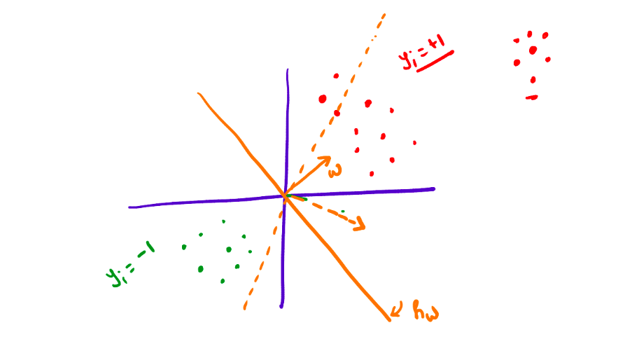
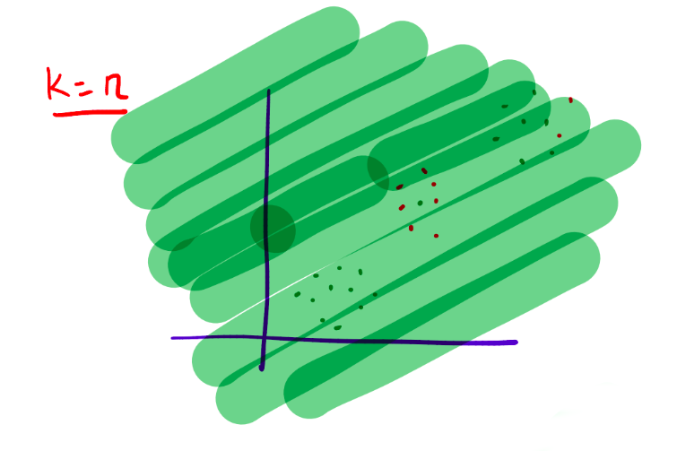
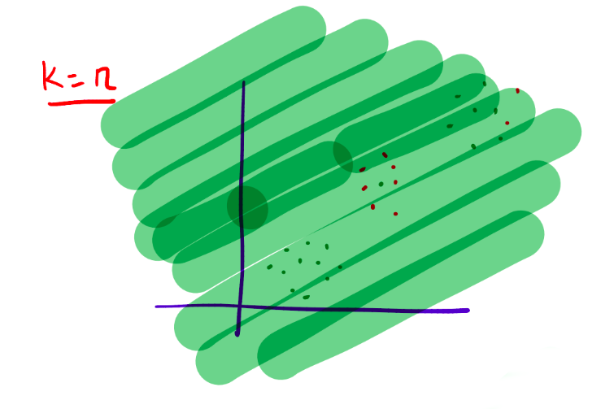

Supervised Learning - Classification - K-NN, Decision tree
PDF Link: notes
Introduction to Binary Classification
Binary classification is a machine learning task where the goal is to classify objects into one of two categories. It is a fundamental problem in various fields, including computer vision, natural language processing, and bioinformatics.
Given a dataset \(\{x_1, \ldots, x_n\}\) where \(x_i \in \mathbb{R}^d\), let \(\{y_1, \ldots, y_n\}\) be the labels, where \(y_i \in \{0, 1\}\). The goal is given by \(h: \mathbb{R}^d \rightarrow \{0, 1\}\).
The loss for this function is given by, \[ loss(h)=\frac{1}{n}\sum ^n _{i=1}\mathbb{1}\left ( h(x_i) \ne y_i \right ) \] Let \(\mathcal{H}_{\text{linear}}\) represent the solution space for the mapping in the linear space. \[ \mathcal{H}_{\text{linear}}=\Biggr \lbrace{h_w: \mathbb{R}^d \rightarrow \{1, 0\} \hspace{0.5em} s.t. \hspace{0.5em} h_w(x)=sign(w^Tx) \hspace{0.5em} \forall w \in \mathbb{R}^d } \Biggr \rbrace \] Therefore, the objective function is given by, \[ \min _{h \in \mathcal{H}_{\text{linear}}} \sum _{i=1} ^n \mathbb{1}\left ( h(x_i) \ne y_i \right ) \] This objective function presents an NP-Hard Problem, indicating the challenge in arriving at optimal and sufficient parameters. Therefore, improved implementations are necessary to address this complexity and achieve satisfactory results.
Linear Classifier
Can we use linear regression to solve this classification problem?
The proposed algorithm would be as follows: \[ \{(x_1, y_1), \ldots, (x_n,y_n)\} \xrightarrow[Regression]{Linear} w \in \mathbb{R}^d\rightarrow h_w: \mathbb{R}^d \rightarrow \{1, 0\} \] But this poses an issue in classification. Look at the diagram below:

Upon a detailed examination of the above diagram, it is evident that classification based on Linear Regression not only partitions the two categories of data based on their respective sides but also their positions. Consequently, this approach may cause the classification boundary to shift w.r.t. the outliers in the dataset. Therefore, this approach is not feasible.
K-Nearest Neighbours Algorithm
The K-Nearest Neighbor (K-NN) algorithm is a popular non-parametric method used for classification and regression tasks in machine learning. It operates by identifying the K-nearest data points to the target object, classifying or regressing the target object based on the majority of its nearest neighbors.
The algorithm is as follows:
- Given \(x_{test}\) find the \(k\)-closest points in the training set - \(\{x_1^*, x_2^*, \ldots, x_k^*\}\).
- Predict \(y_{test} = \text{majority}(y_1^*, y_2^*, \ldots, y_k^*)\)
Look at the following diagrams to the see the effect of the value of \(k\) on the classification:
 \[
\text{When }k=1\text{, the classification is too sensitive to the outliers.}
\]  \[
\text{When }k=n\text{, the classification is too smooth.}
\]
\[
\text{When }k=1\text{, the classification is too sensitive to the outliers.}
\]  \[
\text{When }k=n\text{, the classification is too smooth.}
\]  \[
\text{When }k=k^*\text{, the classification is just right.}
\] The choice of \(k\) is usually done by cross-validation, where \(k\) is treated as a hyper-parameter. The smaller \(k\) is, the more complex the classification will be.
\[
\text{When }k=k^*\text{, the classification is just right.}
\] The choice of \(k\) is usually done by cross-validation, where \(k\) is treated as a hyper-parameter. The smaller \(k\) is, the more complex the classification will be.
Issues with K-NN
Following are the issues with the algorithm:
- The choice of distance function itself can give different results. The Euclidean distance might not always be the best fit!
- It can be computationally demanding. When making a prediction for a single test datapoint, the distances between that datapoint and all training points must be calculated and sorted. As a result, the algorithm has a complexity of \(O(nlog(n))\), where \(n\) represents the size of the dataset.
- No model is learned by this algorithm. It always needs the training dataset to make proper predictions.
Introduction to Decision Trees
Decision trees are a popular machine learning algorithm that operates by recursively splitting the data based on the most informative features until a stopping criterion is met. They are widely used for classification and regression tasks and can be visualized as a tree-like structure.
Given a dataset \(\{x_1, \ldots, x_n\}\) where \(x_i \in \mathbb{R}^d\), let \(\{y_1, \ldots, y_n\}\) be the labels where \(y_i \in \{0, 1\}\). The output of the algorithm will be a decision tree.
Prediction: Given \(x_{test}\), traverse through the tree to reach a leaf node. \(y_{test} = \text{value in the leaf node}\).
Pictorial depiction of the decision tree:

where a question is a (feature, value) pair. Example: \(height\le180cm\)?
Goodness of a Question
Let \(D=\{(x_1, y_1), \ldots, (x_n,y_n)\}\) be the dataset. We partition it using a question into \(D_{yes}\) and \(D_{no}\).
What we need is a measure of “Impurity” for a set of labels \(\{y_1, \ldots, y_n\}\). This measure can be given by various ways, but we will use the Entropy Function.
The Entropy function is given by, \[ Entropy(\{y_1, \ldots, y_n\}) = Entropy(p) = -\left( p\log(p)+(1-p)\log(1-p) \right ) \] where conventionally \(\log(0)\) is treated as \(0\).
Pictorial Representation of the Entropy function:

Then, we use Information Gain to measure the goodness of the split.
Information gain is a commonly used criterion in decision tree algorithms that measures the reduction in entropy or impurity of a dataset after splitting based on a given feature. By selecting features with high information gain, decision trees can effectively differentiate between the different classes of data and make accurate predictions.
Information gain is given by, \[ \text{Information Gain}(feature,value)=Entropy(D) - \left [ \gamma Entropy(D_{yes})+(1-\gamma)Entropy(D_{no}) \right ] \] where \(\gamma\) is given by, \[ \gamma=\frac{|D_{yes}|}{|D|} \]
Decision Tree Algorithm
The algorithm is as follows:
- Discretize each feature in [min,max] range.
- Pick the question that has the largest information gain.
- Repeat the procedure for \(D_{yes}\) and \(D_{no}\).
- Stop growing the tree if a node becomes sufficiently “pure”.
The goodness of a question can also be measured using different methods like the Gini Index, etc.
Pictorial Depiction of decision boundary and its decision tree:

Generative and Discriminative Models
For the classical Classification problem, there are two types of modeling: Generative and Discriminative Models.
Generative Models are given by, \[ P(x,y) \] This primarily tries to model the feature generation.
Discriminative Models are given by, \[ P(y|x) \] This only generates labels based on the data.
Credits
Professor Arun Rajkumar: The content as well as the notations are from his slides and lecture.